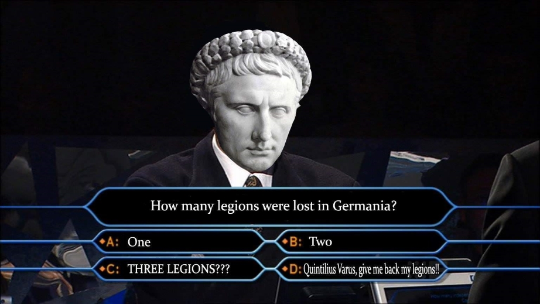

Science in the 20th Century notes

Written January 19th, 2023
The Emergence of Human Beings
When did science begin? Great question, when people began searching for answers maybe
- 800K years ago: fire
- then modern humans(?)
- they're dressing
- negotiating
- ice age happens
- domestication of the wolf "probably occurred somewhere between 40,000 and 15,000 years ago somewhere on the Eurasian continent"
- agriculture started 10K years ago
- domestication of plants
- modern day plants are mutated so their seeds do not fall and can be harvested by humans
- "Civilization is based on food"
Stone Age
- people of the Sahara gather in the Nile valley
- they become farmers
- Mesopotamia begins
- cities are areas to gather for the harvest
- writing system is invented in egypt, mesopotamia, the indian valley, and china
Egyptian Science Begins
- they realize there are patterns in the way the sun and moon set
- also that there are planets and stars that change placements in the sky throughout the year
- i look away for two seconds and we're talking about demons. I don't know why...
- smth smth
- rituals and religion (?)
- social order
- religion
- "science is more about knowing about matter and motion and things like that"
- coorporate science in egypt
- because most people couldn't read, most people didn't know of secret science...?
- 1-5% of people could read in ancient egypt
- egyptians did have public knowledge actually, my bad - prof martin probably
Greece
- greece began as a barbaric invasion from the north
- oral tradition in greece due to lack of literacy
- greek writing system first taken from crete
- greece begins building cities
- so we're just skipping? the? yeah ok...
- in the old age, if someone owed money, they could be forced to serve
- let's go indentured servitude
- Greece be like: demorcacy my beloved
- what would u do if u were in ancient greece.#girlboss